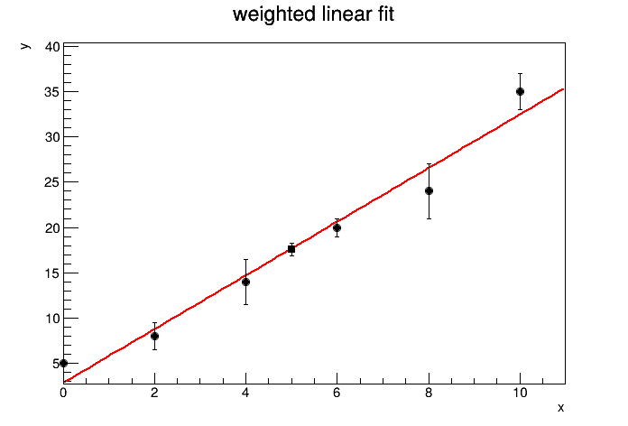

加权拟合与拟合结果的误差传播
测量点精度不同时，拟合应使用各点的测量误差；由拟合参数计算新的量时，还要保留参数之间的协方差。下面用直线拟合说明这一方法，它同样适用于其他拟合函数。
加权拟合
对直线 \(f(x)=p_0+p_1x\)，最小化
\[
\chi^2=\sum_i\frac{[y_i-f(x_i)]^2}{\sigma_i^2}.
\]
TGraphErrors 会把各点的纵向误差用于拟合，因此不确定度较小的点具有较大的权重。ROOT 的 W 选项会忽略这些误差，不应在这里使用。
拟合值的误差传播
若拟合参数为 \(\boldsymbol p\)，由参数计算的量为 \(g(\boldsymbol p)\)，则
\[
\sigma_g^2=
\sum_{i,j}\frac{\partial g}{\partial p_i}
\operatorname{Cov}(p_i,p_j)
\frac{\partial g}{\partial p_j}.
\]
对于本例，在给定位置 \(x_0\)，拟合值为 \(f(x_0)=p_0+p_1x_0\)，因此
\[
\sigma_f^2(x_0)=
\operatorname{Var}(p_0)+x_0^2\operatorname{Var}(p_1)
+2x_0\operatorname{Cov}(p_0,p_1).
\]
double x[] = {0, 2, 4, 6, 8, 10};
double y[] = {5, 8, 14, 20, 24, 35};
double ey[] = {2, 1.5, 2.5, 1, 3, 2};
TGraphErrors graph(6, x, y, nullptr, ey);
TF1 line("line", "pol1", 0.0, 10.0);
TFitResultPtr result = graph.Fit(&line, "S"); // S：保存完整拟合结果
TMatrixDSym covariance = result->GetCovarianceMatrix(); // 参数协方差矩阵
double x0 = 5.0;
double fittedValue = line.Eval(x0);
double variance = covariance(0, 0)
+ x0 * x0 * covariance(1, 1)
+ 2.0 * x0 * covariance(0, 1);
double error = sqrt(variance);
std::cout << "f(5) = " << fittedValue
<< " +/- " << error << "\n";
std::cout << "chi2/ndf = " << result->Chi2()
<< " / " << result->Ndf() << "\n";
TGraphErrors prediction(1);
prediction.SetPoint(0, x0, fittedValue);
prediction.SetPointError(0, 0.0, error);
graph.SetTitle("weighted linear fit;x;y");
graph.SetMarkerStyle(20);
graph.Draw("AP");
prediction.SetMarkerStyle(21);
prediction.Draw("P same");import array
import math
import ROOT
x = array.array("d", [0, 2, 4, 6, 8, 10])
y = array.array("d", [5, 8, 14, 20, 24, 35])
ex = array.array("d", [0, 0, 0, 0, 0, 0])
ey = array.array("d", [2, 1.5, 2.5, 1, 3, 2])
graph = ROOT.TGraphErrors(6, x, y, ex, ey)
line = ROOT.TF1("line", "pol1", 0.0, 10.0)
result = graph.Fit(line, "S") # S：保存完整拟合结果
covariance = result.GetCovarianceMatrix() # 参数协方差矩阵
x0 = 5.0
fitted_value = line.Eval(x0)
variance = (covariance[0][0]
+ x0 * x0 * covariance[1][1]
+ 2.0 * x0 * covariance[0][1])
error = math.sqrt(variance)
print("f(5) =", fitted_value, "+/-", error)
print("chi2/ndf =", result.Chi2(), "/", result.Ndf())
prediction = ROOT.TGraphErrors(1)
prediction.SetPoint(0, x0, fitted_value)
prediction.SetPointError(0, 0.0, error)
graph.SetTitle("weighted linear fit;x;y")
graph.SetMarkerStyle(20)
graph.Draw("AP")
prediction.SetMarkerStyle(21)
prediction.Draw("P same")
选项 S 返回完整的拟合结果，从中可以读取协方差矩阵。这里得到的是拟合直线在 \(x_0\) 处的统计不确定度，不包含一次新测量本身的额外涨落。代码同时输出 \(\chi^2\) 和自由度，用于检查直线模型是否能描述数据。